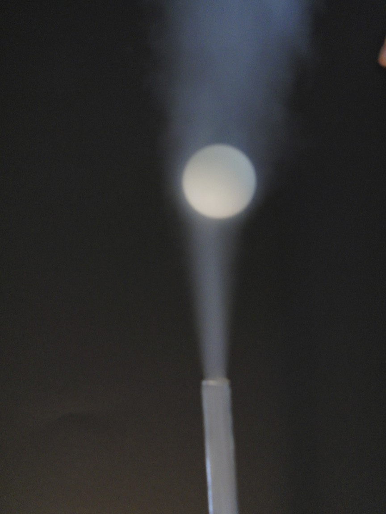

MEME (Massive Exoplanet Meme Exposition)
Together with 3 friends, I co-founded the MEME. Every year in January, the MEME presents memes all around exoplanets, astrophysics and student life.
"Hands learn faster than eyes"
The Swiss Young Physicist Tournament (SYPT) is an annual event for which high school students have to conduct and present physical experiments. Each student has to choose an experiment out of a list of this years problems. Then, over the course of the school year, they have to perform the experiment, document their methods and results and prepare a presentation. During the actual event, each student has to perform three tasks: presenting their own work, debating the work of someone else and summarise the debate of two others. Each category is graded by a jury and the person with the overall highest score wins the tournament.

During high school, I was already fascinated by physics and jumped on the opportunity to conduct my own experiments. I participated every year and was happy to see how my own personal skills improved during this time. One of the experiments was to analyse why a table tennis ball would stay within an air stream. By testing different tilts of the stream, we could measure the strength of the Magnus effect holding the ball in place.
Together with 3 friends, I co-founded the MEME. Every year in January, the MEME presents memes all around exoplanets, astrophysics and student life.
ARIS is the rocket team of ETH Zuerich. In 2019, I was the payload team leader and together we won 2nd place.
A game development team that started from a high school project. Several groups worked on the design, coding and screen play.
A week on Diavolezza at 3000m trying to observe stellar clusters during a snow storm.
A collaboration between writers and exoplanet scientists to create short stories, poems and radio plays based on contemporary research.
Writing stories and bringing them to life has always been a fascination of mine. With Dungeons and Dragons I have a way to live it.
A group of interdisciplinary projects with the goal to tackle future problems already today.